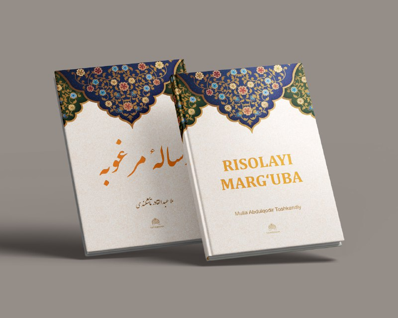

Risolayi marg'uba

Onamning bobolari mulla Olim rahmatullohi alayh naqshbandiya suluki murshidlaridan edi. Sobiq Sho'ro mustamlakasi davrida xalqni dinga, axloqqa irshod qildi. Haq yo'lda ekanligi uchun 20 yillab qamoq va surgun kabi sho'rolar zulmini ko'rdi.
Ona tomondan katta bobomiz bo'lgan bu zot birlamchi manbalar asosida shogirdlariga, farzandlariga ilm bergan. Xususan, mulla AbdulQodir Toshkandiy ismli olim zotning "Risolayi marg'uba" nomli kitobi ta'lim dasturi bo'ib xizmat qilgan.
Onamning onalari, ya'ni buvimiz bundan bir yil avval shu kitobni bergan edilar. Kitob G'ulomiya bosmaxonasida 1913-yil chop etilgan 4-nashr ekan. Oxirgi sahifalarda kitob nozirlari aql ko'zi bilan sahvlarni isloh qilishlari iltimos etilgan.
Buvimiz bergan nusxa shu qadar ko'p o'qilganidan titilib ketgan edi. Ma'lum bo'ldiki, uni buvimizga marhuma opalari qoldirgan bo'lib, u kishiga katta bobomiz hadya qilganlar.
Kamina kitobni katta qiziqish bilan qo'lga oldim.